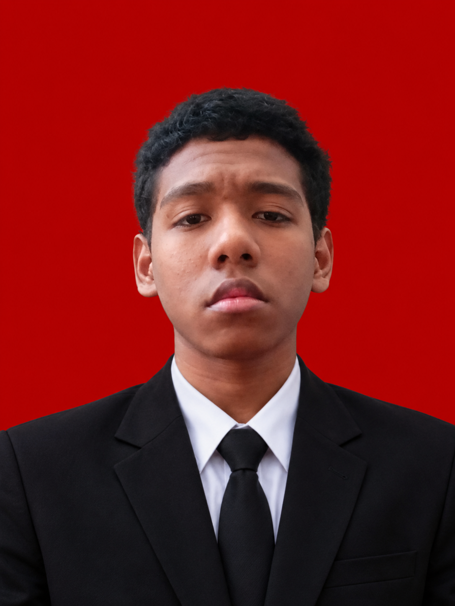

Halo, perkenalkan saya
Siswa SMK Rajasa Surabaya Jurusan Teknik Komputer dan Jaringan. Tertarik pada dunia Keamanan Siber, Jaringan Komputer, dan Web Exploitation.

Status: AktifProfil Saya
Saya adalah seorang siswa kelas XI Teknik Komputer dan Jaringan (TKJ) di SMK Rajasa Surabaya. Memiliki ketertarikan mendalam pada administrasi sistem Linux, konfigurasi jaringan, serta keamanan siber. Aktif berpartisipasi dalam berbagai kompetisi Capture The Flag (CTF) dan pengembangan skrip otomatisasi.
visitor@bryand:~$ cat profile.txt
nama : Angelicos Bryand No
sekolah : SMK Rajasa Surabaya
jurusan : Teknik Komputer & Jaringan
email : angelicosbryand@gmail.com
fokus : Cybersecurity / CTF
status : Pelajar
visitor@bryand:~$ _
Riwayat Akademik
Teknik Komputer dan Jaringan (TKJ)
Kemampuan Saya
Aktivitas & Kompetisi
Berpartisipasi dan sukses mengamankan peringkat ke-5 dari total peserta mewakili SMKS Rajasa Surabaya dalam kompetisi Capture The Flag (CTF) tingkat regional/nasional, menyelesaikan berbagai tantangan keamanan siber dengan perolehan 1.622 poin.
Aktif mengikuti berbagai ajang kompetisi keamanan siber seperti COMPFEST-18, Redlimit CTF (Meta4Sec), IONIC PENS 2026, dan POLSRI CTF 2026 untuk mengasah kemampuan analisis kerentanan sistem, Reverse Enginering, serta web exploitation.
Melakukan konfigurasi jaringan lokal, manajemen server menggunakan Proxmox VE, penerapan kontainerisasi dengan Docker, serta konfigurasi layanan web server.
Mari Terhubung
angelicosbryand@gmail.com
0881-0265-89090